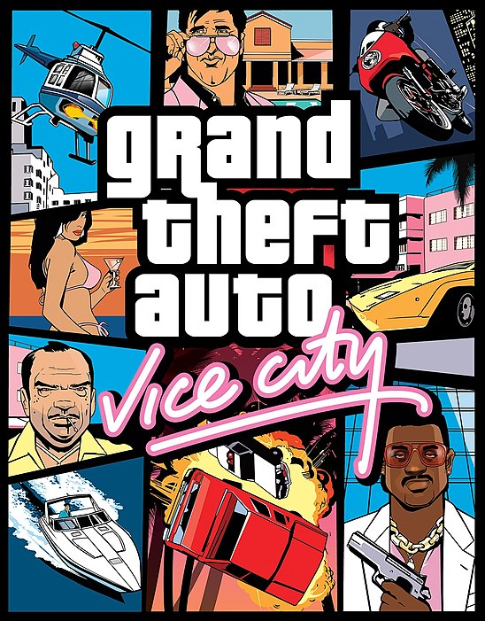
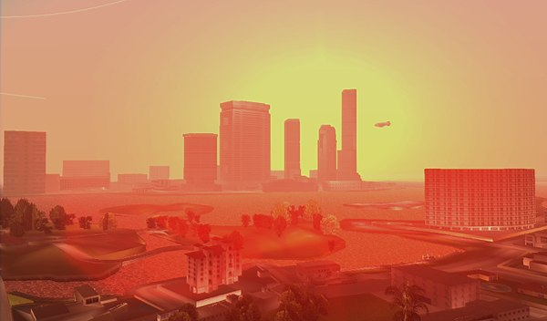

Grand Theft Auto: Vice City — компьютерная игра в жанре action-adventure от третьего лица, разработанная британской студией Rockstar North и выпущенная американской студией Rockstar Games.
Является четвёртой по счёту и второй трёхмерной игрой из серии Grand Theft Auto.
События игры происходят в вымышленном американском городе Вайс-Сити, прототипом для которого послужил город Майами, в 1986 году — визуальный стиль игры, особенно одежда, музыка и транспорт, отражает это, иногда с элементами изящной пародии[8]. Протагонистом игры выступает Томми Версетти, ставший жертвой сговора своего криминального босса Сонни Форелли.
Концепция игры и геймплей в сочетании с использованием 3D-движка игры способствовали тому, что Grand Theft Auto: Vice City стала самой продаваемой видеоигрой 2002 года[9] и одной из наиболее прибыльных компьютерных игр в истории[10].

